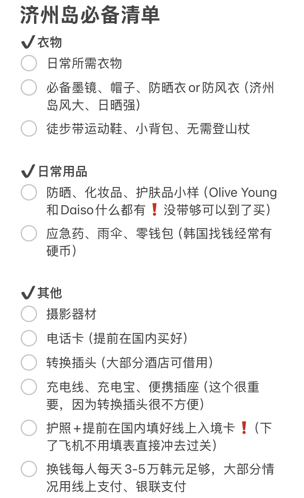
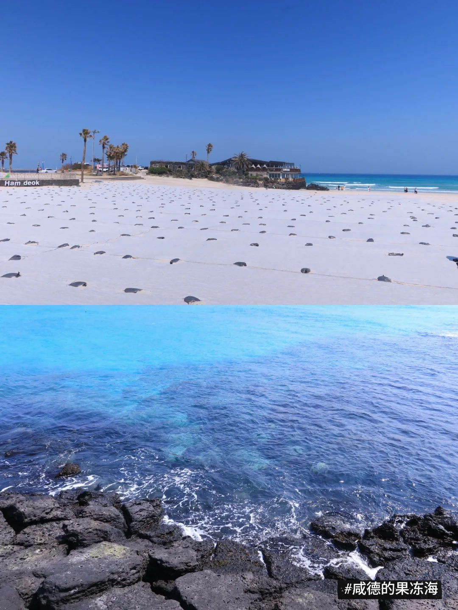
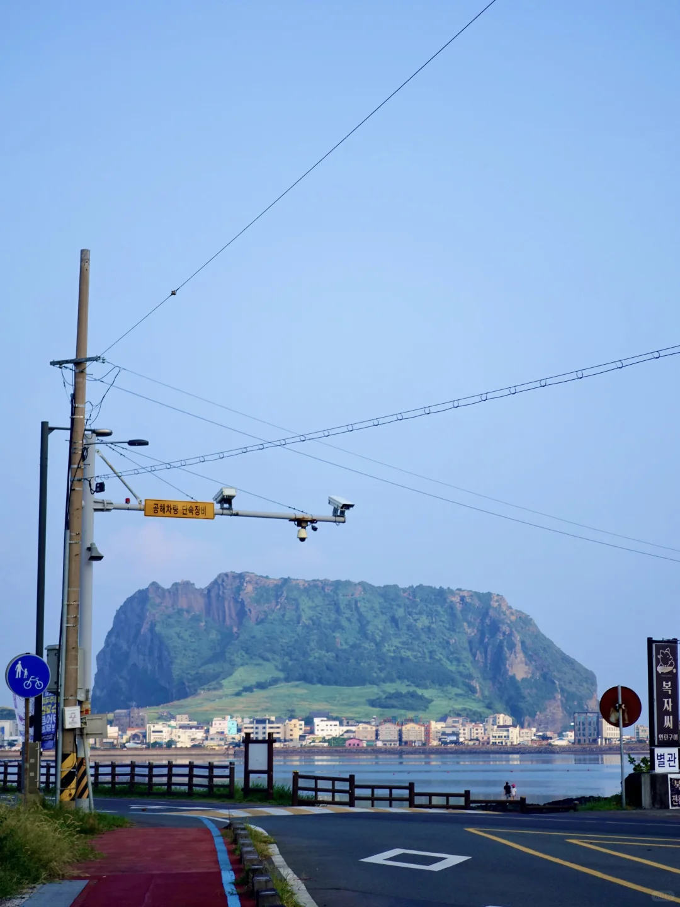
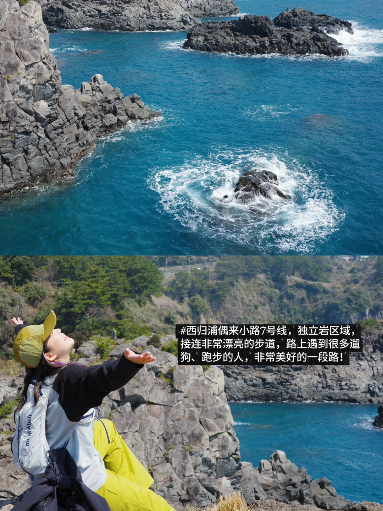
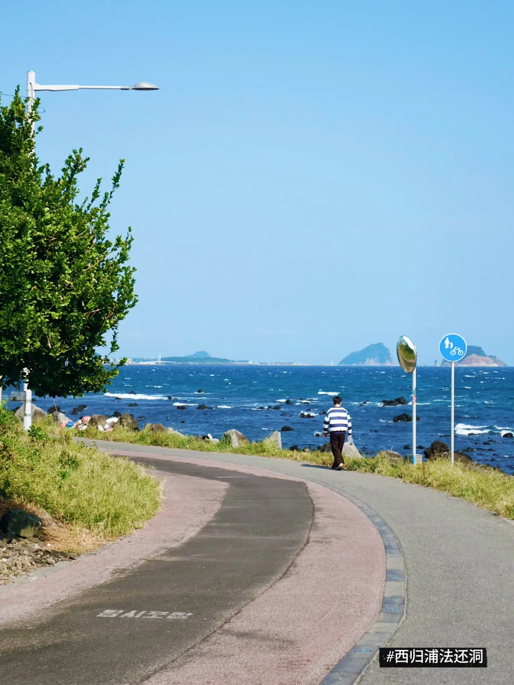
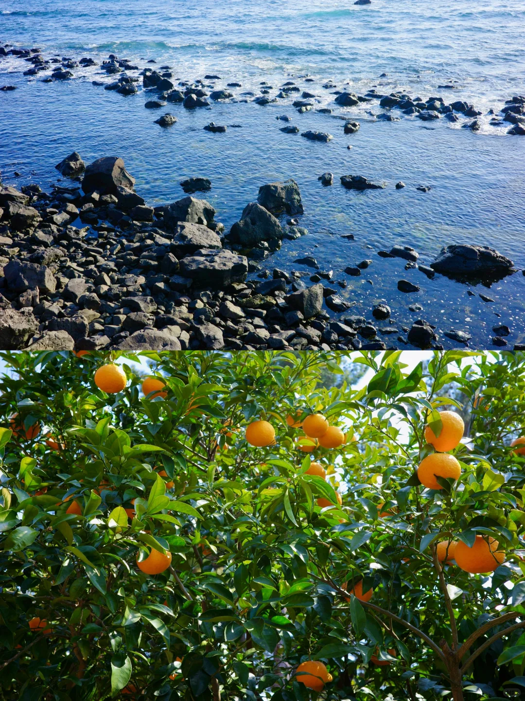
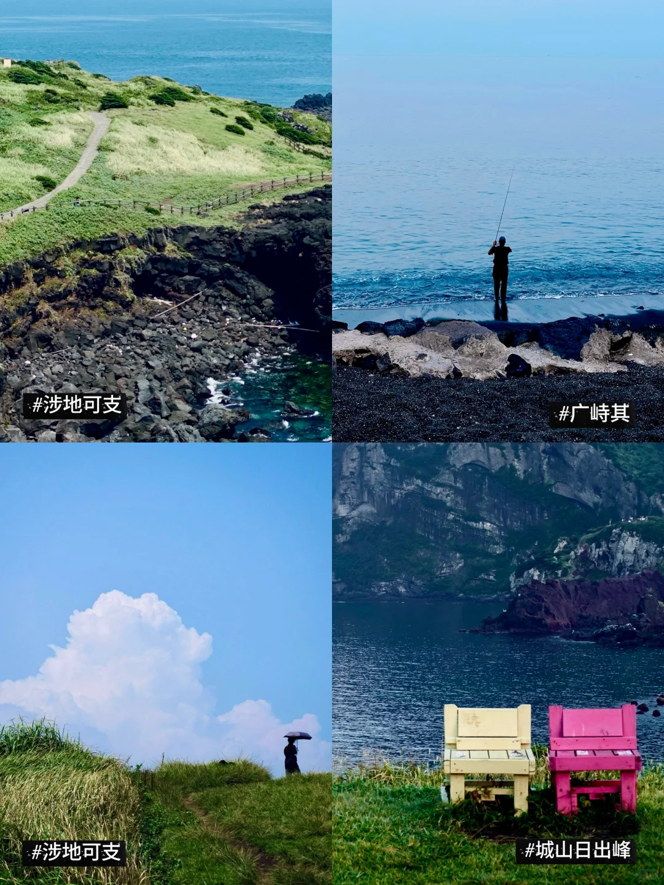
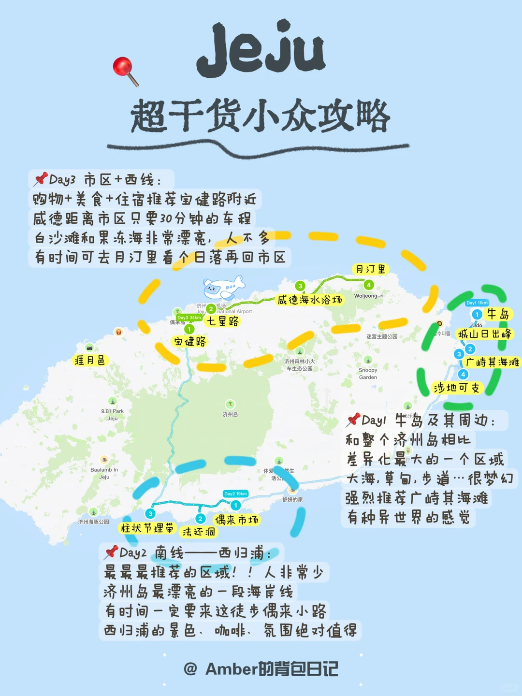
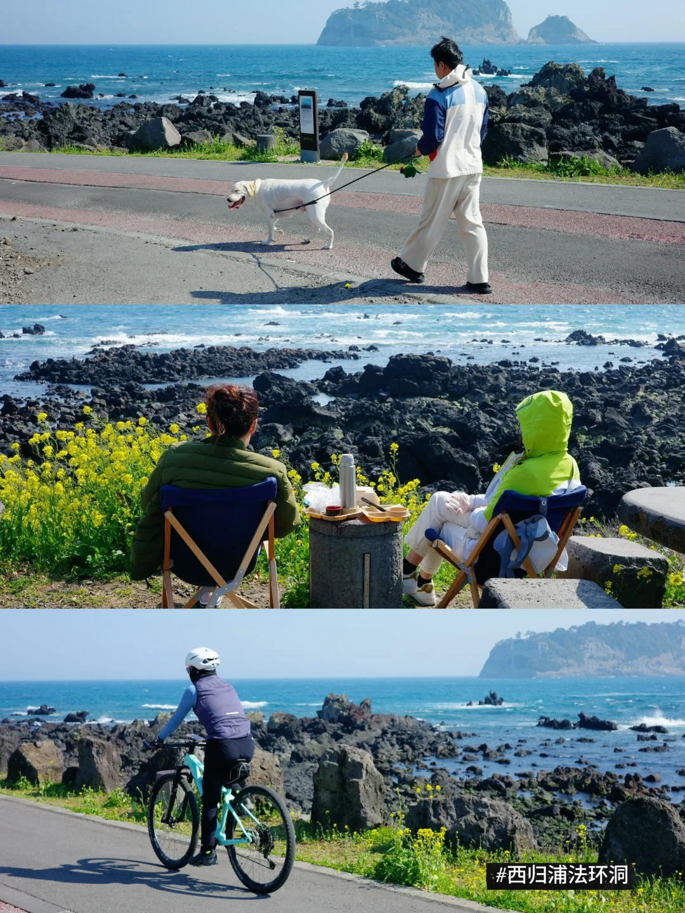
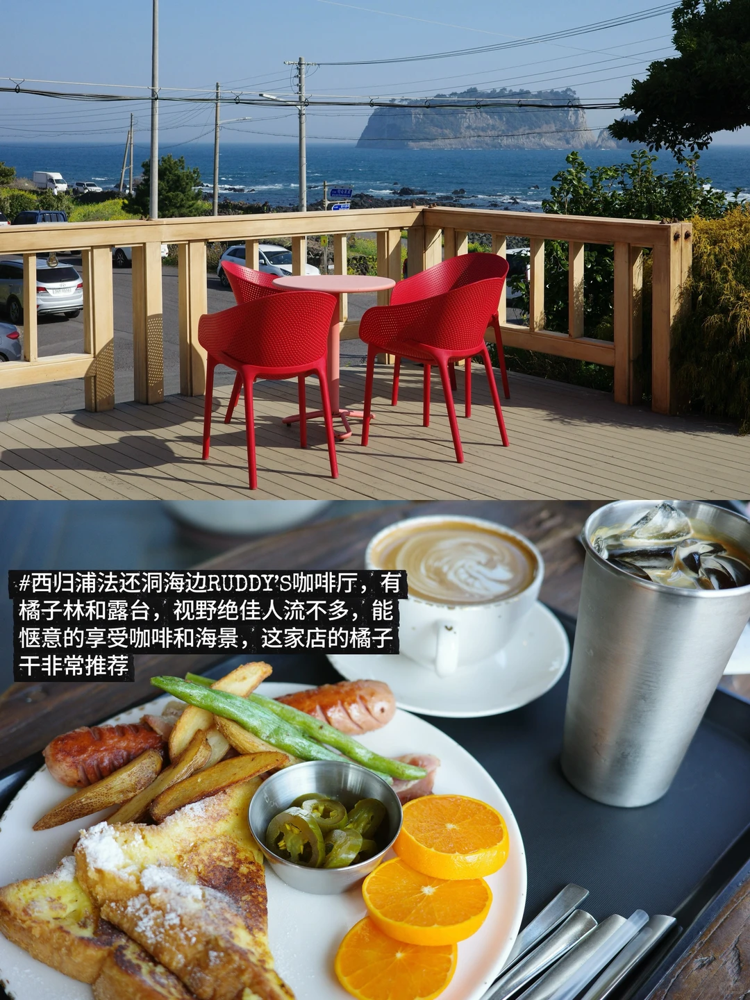

综合小红书6篇高赞笔记 + 500+条评论整理
2026.03.29 by 小胖

图片来源：小红书 @Amber的背包日记
开花日：3月25日
盛花期：3/31 - 4/10（黄金窗口，清明可冲！）




东线海岸 · 南线柱状节理 · 咸德海水浴场


偶来小路徒步 · 集盖章、看海、人文于一体
樱花+油菜花同框，"韩国最美100条公路之一"，需包车前往
1.2km樱花隧道，樱花节主会场，夜樱绝美！建议傍晚去
校门口樱花走廊，人少，日系校园风拍照很出片
古建筑+古樱同框，早上去避旅行团
本地人爱去，超大樱花树下野餐一下午



南线 · 西归浦 · 市区周边
交通便利 离机场近10min 吃喝购物多
评论区建议：不用住机场旁，住宝健路就行
安静度假感 人少景美 适合情侣/亲子
博主实测 4天 不到 3000 RMB / 人
| 项目 | 费用 |
|---|---|
| 往返机票 | ~1,000+ |
| 3晚住宿(人均) | ~600 |
| 吃饭 | ~600 |
| 交通+门票 | ~500 |
注：物价偏高，1.5L矿泉水约10rmb，柑橘2000韩元/个